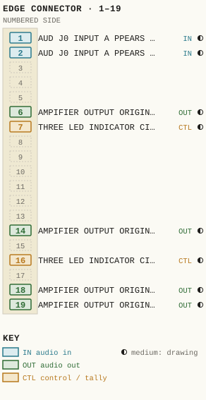
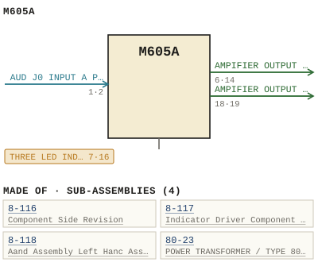

M605A
| Type | module |
| Category | AMPLIFIERS |
| Try it | simulator & front panel · download package (zip) |
| Earliest dated evidence | 1987|20 — title-block date |
| Evidence | "ISSUE 3 JANUARY 1987" in PUBLIC/Manuals + tech DOCUMENTS/Modules/M605A - Audio DA.pdf |
| Confidence | high |
| All years found | 1987|20 |
| Variants | M605, M605C |
| Folder | DOCUMENTS/Internal and Eng Notes and drawings/Quotations brochures and misc papers |
| Folder | Modules/AMPLIFIERS/M605A |
Connections and circuit (ideal SPICE model)
Inputs, outputs, power and control as its own documents name them (no RTO-144 sheet for it: pin numbers only where the page gives them). Run the generator, turn the gain, watch the VU.
Pictures


M605A.pinout.svg

M605A.connections.svg 1987 - M605A - 003.jpg
1987 - M605A - 003.jpg M605A - 003.jpg
M605A - 003.jpg 1987 - M605A - 001.jpg
1987 - M605A - 001.jpg 1987 - M605A - 002.jpg
1987 - M605A - 002.jpg 1987 - M605A - 004.jpg
1987 - M605A - 004.jpg 1987 - M605A - 005.jpg
1987 - M605A - 005.jpg 1987 - M605A - 006.jpg
1987 - M605A - 006.jpg 1987 - M605A - 007.jpg
1987 - M605A - 007.jpg 1987 - M605A - 008.jpg
1987 - M605A - 008.jpg 1987 - M605A - 009.jpg
1987 - M605A - 009.jpg 1987 - M605A - 010.jpg
1987 - M605A - 010.jpg 1987 - M605A - 011.jpg
1987 - M605A - 011.jpg 1987 - M605A - 012.jpg
1987 - M605A - 012.jpg 1987 - M605A - 013.jpg
1987 - M605A - 013.jpg 1987 - M605A - 014.jpg
1987 - M605A - 014.jpg 1987 - M605A - 015.jpg
1987 - M605A - 015.jpg 1987 - M605A - 016.jpg
1987 - M605A - 016.jpg 1987 - M605A - 018.jpg
1987 - M605A - 018.jpg 1987 - M605A - 605-01-002 - COMPARATORS OVERLOAD REF NORMAL REF.jpg
1987 - M605A - 605-01-002 - COMPARATORS OVERLOAD REF NORMAL REF.jpg 1987 - M605A - 605-02-003 - MGOSA AUDIO DISTRIBUTION AMPLIFIER SYSTEM WIRING SCHEMATIC.jpg
1987 - M605A - 605-02-003 - MGOSA AUDIO DISTRIBUTION AMPLIFIER SYSTEM WIRING SCHEMATIC.jpg 1987 - M605A - 605-06-006 - AUDIO DISTRIBUTION AMPLIFIER COMPONENT LAYOUT.jpg
1987 - M605A - 605-06-006 - AUDIO DISTRIBUTION AMPLIFIER COMPONENT LAYOUT.jpg 1987 - M605A - 8-116-06-001 - COMPONENT SIDE REVISION.jpg
1987 - M605A - 8-116-06-001 - COMPONENT SIDE REVISION.jpg 1987 - M605A - 8-117-06-001 - INDICATOR DRIVER COMPONENT LAYOUT.jpg
1987 - M605A - 8-117-06-001 - INDICATOR DRIVER COMPONENT LAYOUT.jpg 1987 - M605A - 8-118-06-001 - RIGHT HAND ASSEMBLY LEFT HAND ASSEMELY.jpg
1987 - M605A - 8-118-06-001 - RIGHT HAND ASSEMBLY LEFT HAND ASSEMELY.jpg 19xx - DOC - US Sales Brochure pg 15.jpg
19xx - DOC - US Sales Brochure pg 15.jpg 19xx - DOC - US Sales Brochure pg 16.jpg
19xx - DOC - US Sales Brochure pg 16.jpg 19xx - DOC - US Sales Brochure pg 17.jpg
19xx - DOC - US Sales Brochure pg 17.jpg 19xx - DOC - US Sales Brochure pg 19.jpg
19xx - DOC - US Sales Brochure pg 19.jpg 19xx - DOC - US Sales Brochure pg 20.jpg
19xx - DOC - US Sales Brochure pg 20.jpg M605A - 017.jpg
M605A - 017.jpg M605A - 019.jpg
M605A - 019.jpg 19xx - DOC - US Sales Brochure pg 11.jpg
19xx - DOC - US Sales Brochure pg 11.jpg 19xx - DOC - WBSPS - AD - for the engineer who has everything.jpg
19xx - DOC - WBSPS - AD - for the engineer who has everything.jpg 1976 - M464 - WBS test procedures 3.jpeg
1976 - M464 - WBS test procedures 3.jpegPrice history
| Year | Kind | Price | Listed as | Effective | Source |
|---|---|---|---|---|---|
| 2005|38 | used market value | 25.00 | M605A Audio DA | wbsps - website ARCHIVE/WBSPS 2008/ARCHIVE/old website/PriceGuide.htm | |
| 2006|39 | used market value | 25.00 | M605A Audio DA | wbsps - website ARCHIVE/WBSPS 2008/ARCHIVE/jan 2006 shell/priceguide.htm |
Pinout & connections
Each contact as its own documents name it: 8 named (8 medium confidence). An empty slot is a contact no page names. Hover a contact for its source; the table under the drawing lists them.
pinout (SVG) · connections (SVG) · pins (JSON)
Pin evidence — 8 contacts
| Pin | Signal | Kind | Confidence | Read from | Source |
|---|---|---|---|---|---|
| 1 | AUD J0 INPUT A PPEARS AT PINS also: AUD J0 INPUT (prose) | audio in | medium | prose | 19xx - DOC - US Sales Brochure pg 17.jpg, p. 1 “Input The aud j0 input a ppears at Pins 1 and 9 0 f the modu ]e connector a nd enters the 8-116 amp] ifier card at pins 1 and 2 .” |
| 2 | AUD J0 INPUT A PPEARS AT PINS also: AUD J0 INPUT (prose) | audio in | medium | prose | 19xx - DOC - US Sales Brochure pg 17.jpg, p. 1 “Input The aud j0 input a ppears at Pins 1 and 9 0 f the modu ]e connector a nd enters the 8-116 amp] ifier card at pins 1 and 2 .” |
| 6 | AMPIFIER OUTPUT ORIGINAT ING FROM PINS 18 also: AMPLIFIER OUTPUT ORIG… (prose); AMPLIFIER OUTPUT ORIG… (prose); AMPLIFIER OUTPUT ORIG… (prose) | audio out | medium | prose | 19xx - DOC - US Sales Brochure pg 17.jpg, p. 1 “The amp]ifier output originat ing from pins 18 and 19 0 f the amp] ifier card 8 - 116 is connected to the DIRECT output a t pins 6 and 14 0…” |
| 7 | THREE LED INDICATOR CIRCUITS also: THREE LED INDICATOR C… (prose) | control / tally | medium | prose | 19xx - DOC - US Sales Brochure pg 19.jpg, p. 1 “WAAD-BECK SysteMs LTD_ CIRCUIT DESCRIPTION M605A AUDI0 DISTRIBUTION AMPLIFIER The three LED indicator circuits are packaged separately on a…” |
| 14 | AMPIFIER OUTPUT ORIGINAT ING FROM PINS 18 also: AMPLIFIER OUTPUT ORIG… (prose); AMPLIFIER OUTPUT ORIG… (prose); AMPLIFIER OUTPUT ORIG… (prose) | audio out | medium | prose | 19xx - DOC - US Sales Brochure pg 17.jpg, p. 1 “The amp]ifier output originat ing from pins 18 and 19 0 f the amp] ifier card 8 - 116 is connected to the DIRECT output a t pins 6 and 14 0…” |
| 16 | THREE LED INDICATOR CIRCUITS also: THREE LED INDICATOR C… (prose) | control / tally | medium | prose | 19xx - DOC - US Sales Brochure pg 19.jpg, p. 1 “WAAD-BECK SysteMs LTD_ CIRCUIT DESCRIPTION M605A AUDI0 DISTRIBUTION AMPLIFIER The three LED indicator circuits are packaged separately on a…” |
| 18 | AMPIFIER OUTPUT ORIGINAT ING also: AMPLIFIER OUTPUT ORIG… (prose); AMPLIFIER OUTPUT ORIG… (prose); AMPLIFIER OUTPUT ORIG… (prose); ACTIVELY BALANCED OUT… (prose) | audio out | medium | prose | 19xx - DOC - US Sales Brochure pg 17.jpg, p. 1 “The amp]ifier output originat ing from pins 18 and 19 0 f the amp] ifier card 8 - 116 is connected to the DIRECT output a t pins 6 and 14 0…” |
| 19 | AMPIFIER OUTPUT ORIGINAT ING also: AMPLIFIER OUTPUT ORIG… (prose); AMPLIFIER OUTPUT ORIG… (prose); AMPLIFIER OUTPUT ORIG… (prose); ACTIVELY BALANCED OUT… (prose) | audio out | medium | prose | 19xx - DOC - US Sales Brochure pg 17.jpg, p. 1 “The amp]ifier output originat ing from pins 18 and 19 0 f the amp] ifier card 8 - 116 is connected to the DIRECT output a t pins 6 and 14 0…” |
Dates found in the documents
| Year | Kind | Text | File |
|---|---|---|---|
| 1987|20 | title-block date | ISSUE 3 JANUARY 1987 |
1987 - M605A - 003.jpg |
| 1987|20 | title-block date | ISSUE 3 JANUARY 1987 |
1987 - M605A - Audio DA.pdf |
| 1987|20 | title-block date | ISSUE JANUARY 1987 |
M605A - 003.jpg |
Physical manual inventory
| Item | Location | Status | Scanned |
|---|---|---|---|
| M605A - Audio DA | PDF - Already scanned |
Documents (2)
| Year | File | |
|---|---|---|
| 1987|20 | 1987 - M605A - Audio DA (2).pdf | note |
| 1987|20 | 1987 - M605A - Audio DA.pdf | note |
Photos & scans (36)


Sub-assemblies & parts used (4)
| Item | What | Family | Year | How we know |
|---|---|---|---|---|
| 8-116 | Component Side Revision | Sub-assemblies (n-nnn) | drawing filed with it | |
| 8-117 | Indicator Driver Component Layout | Sub-assemblies (n-nnn) | drawing filed with it | |
| 8-118 | Aand Assembly Left Hanc Assemely | Sub-assemblies (n-nnn) | drawing filed with it | |
| 80-23 | POWER TRANSFORMER / TYPE 80-23 | Power transformers (80-n) | 1978|11 | named in its manual |
Parts list — board 8-116 (16 parts)
From 1987 - M605A - Audio DA.pdf, page 11 (scanned); also in timelines/data/bom.csv.
| Ref | Part | Value | Manufacturer | Mfr part no. |
|---|---|---|---|---|
| M605A | AUDI0 DISTRIBUTION AMPLIFIER | |||
| F201 | Fuse 0.175A S.B. Buss MDL 8 | 175/1000 | ||
| R201 | Potentiometer Clarostat WBS | 5k | 10-036 | |
| T201 | Transformer Hammond WBS | 80-23 | ||
| C1 | Capacitor uF/35 V Kemet T390E.226M035AS 7 { | 22 | ||
| C8 | pF Philips | 4.7 | 2222-638-09478 | |
| C9 | uF/10 V Kemet | 33 | T3900336M010AS | |
| C16 | uF/35 V Kemet | 15 | T390E 156M035AS | |
| C17 | pF Philips | 22 | 2222-638-58229 | |
| C18 | uF Aselco | 0.022 | c092-MC-100-223m | |
| C19 | uF/10 V Kemet | 33 | T3900 336M01OAS | |
| C20 | pF Philips | 100 | 2222-638-70101 | |
| C25 | 4 " ^ . " | '0 uF/35 V Kemet T390E 156M035AS 2= | 15 | ||
| C26 | pF Philips 2222-638-58229 (1: | 22 | ||
| C27 | uF Aselco c092-MC-100-223m X ' | 0.022 | ||
| C28 | 'c .^ | 7204} 6 uF/40v Philips 437E7G470 c: - | 470 |
Parts list — board 8-448 (6 parts)
From 1987 - M605A - Audio DA.pdf, page 15 (scanned); also in timelines/data/bom.csv.
| Ref | Part | Value | Manufacturer | Mfr part no. |
|---|---|---|---|---|
| M605A | AUDIO DASTRIBUTION_AMPLIFIER | |||
| R103 | Resistor 1/4w Ik Philips | 5% | ||
| R105 | Resistor 1/4w 3k9 Philips | 59 | ||
| R108 | IKB | |||
| U101 | Integrated Circuit National | LMI4SBN | ||
| R202 | Resistor 1/2w 300 Philips | 5% |
Parts list — board M605A (31 parts)
From 1987 - M605A - Audio DA.pdf, page 12 (scanned); also in timelines/data/bom.csv.
| Ref | Part | Value | Manufacturer | Mfr part no. |
|---|---|---|---|---|
| C29 | Capacitor uF/40 V Philips 437ETG470 2: | 470 | ||
| C32 | uF/10 V Kemet T3900336m0|OAS 3 | 33 | ||
| C33 | pF Philips | 100 | 2222-638-70101 | |
| Q3 | Texas FNPSSB ; | |||
| R9 | Trim pot Piher PT 1Oh (2.5) | 20k | ||
| R10 | Resistor 1/4w 33k Philips | 5% | ||
| R12 | Trim pot sk Piher PT 1Oh (2.5) | 5k | ||
| M605A | AUD4o_DLSTRIBUILON AMLIFIER | |||
| R13 | Resistor 1/4w IKB Philips | 5% | ||
| R23 | Trim pot s0k Piher PT T0h (2.5) sok | |||
| R2L | Resistor 1/4w5% Philips L1 ' | 27k | cJ'+^67 ' | |
| R33 | Resistor 1/2w 4.7 A/B | 5% | 10! } | |
| R35 | # ( 7 6es "0,7 ioi | 4 | ||
| R36 | Resistor 1/4w 5% Philips F | 22 | ||
| R4I | Trim pot s0k Piher PT IOh (2.5) s0k ( | |||
| R42 | Resistor 1/4w 15k Philips C | 5% | ||
| R46 | Resistor 1/4w 22 Philips 2'2 | 57 | ||
| R5I | Resistor /2w 5% 4 .7 A/B 'i; |
1 | ||
| R54 | Resistor /4w 5% 22 Philips Ci { | 1 | ||
| U1 | Integrated circuit National Lmzoin 1 4 = | 40 | ||
| U3 | LM2OIN | |||
| CR10I | Diode, Zener Motorola IN4ZLOA | 34 | ||
| CR102 | Fairchild | IN4ILB | ||
| DS2 | LED red | HLMP_1301 | ||
| DS3 | LED, green | HLMP_1501 | ||
| R24 | Resistor /4w 5% Philips | 27k | ||
| R25 | ISK | |||
| R38 | IOM | 1 ': - | ||
| R5S | IKJ | |||
| U4 | Lmzoin | |||
| C101 | Capacitor uF/35 Keme [ | T390B105M035AS |
Named in other drawings & documents (10)


From the manuals
Each manual split into its sections. Text that is the same in many Ward-Beck manuals (warranty, address, standard notes) is kept once on the Boilerplate page and linked.
General description (1)
Description — 297 words · 1987 - M605A - Audio DA.pdf, page 8
MGOSA AUDIO DISTRIBUTION AMPLIFIER The DIRECT output may be utilized I0 expand the number of isolated outputs by an additional four t0 total of eight, by means of an external splitter nefWork. The minimum total load impedance that can be driven by the DIRECT output is 150 ohms at maximum output capability of Tour watts. Indica torg Three LED indicators are provided at Tne front of the unit. DSI (yellow) monitors the + - 32 volts supply voltage and serves as "power on" indicator DS3 (green is known a5 the "Normal" indicator_ Tt wili Mluminate whenever the nominal program output evel reaches +8 vu under program conditions. Under steady state tone conditions DS3 wiii not Muminate until the outpui reaches level of I0 dB above +8 dBm . DS3 is operated by one half of comparator u101 via the col lector of 0103 . The inputs of the comparator consist of Tixed reference voltage applied t0 Pin and dc voltage derived from the averaged audio signal via CR10L, CR1OS , R11S, RIIL and Cio2, and applied t0 pin 6 0S2 (red) is an "Overload" indicator which wili operate when the average program oulput level reaches +18 vu. Under steady state tone conditions DS2 wili not iluminate untii the output reaches level of +22 to +23 dBm . Furthermore, 45 0S2 is switched on , 0103 will be cut off, disabling DS3 . Ds2 is driven by the second half of comparator uio1 Again, fixed reference voltage is applied [O pin 3 , wnile pin 2 is supplied with peak-detected audio signal voltage derived from CR102 , CR103 , RI13 and cioi 0101 and 0102 form precision current source, feeding voltage divider R1OZ/R108 , which in turn provides the two comparator reference voltages. 2-2
WARO-BeCk systems LTD; ciRcuit
- source: 1987 - M605A - Audio DA.pdf, p. 8
Specifications (4)
Technical Data — 2352 words · 1987 - M605A - Audio DA (2).pdf, page 6
M&Q5A AUDIO DISTRIBU TION AMPLIFIE R
Ol.....,. lon.' 1.7" w ide" 3. 4" ni g h" 13 . 7" deep ( 42......, .. 8J ......, " 3J6 ......, 1.
3 pound. IT . 4 kg) ne t .
a .c ps BS W :// tp ht
W A Fl D -lSIECK .Y8 TII! MB L TD .
CI RCUI T DESCR IP T ION
M60SA AUD IO DIS TRI BUT ION AMPLIF IER
The M605A audi o dis tri butIon a mpli f iar ,s an a<: OPa r a ted , .-<tu l.. r p lug- in u ni t d e s i gned to b ri d ge .. c ro" .. si n gl e a u d io -.. rce a n d provide a mult ip le of mu tua lly Iso l U ed OU tp u t S at a s tanda rd le ve l lor dls tr i b u lion t hrough .. n .. udl o sys t em .
I nput
Tha aud io inp u t .. pPe..... .. t pi ns 1 a n d 9 o f the .-<tu le connoec tor .. nd e n te rs the 8-116 a mpli f ier c .. rd a t p in s 1 and 2.
An ove rload p ro t ec ll on circui t <:on.l. tl nll o f R2 , R3 a nd CR 1 t hrou g h CR4 p r ev en ts e xce estve i n p u t la v e . s or v o lt a g ., tran s lant s lrom POtent la .ty damaging the amp l ifl. r .
nUl aud io s i g n a l is coupled t h rou g h Cl to C/o to t h e p r e a mp l if ie r s ec t io n , c on ll s t l n g of Ul and U2 . R12 a dju5ls t he gain di fference b e t we en Ul and U2 to optimize the longitudinal balance a t l OW f r e Qu e n c Ie s , while R9 serves the l a me purpose for high freque n c ies .
The g ai n of Ihe M605A 11 de te rm ined by poten tiometer R201, wh kh c on t ro l. the f.,edba<:k a rou n d U2. The ove r a l l amp tU le r g ai n II <:on t l n uou s ' y adjustab le from "18 to - 6 d B.
Ou tou t
The prea moll fl e r ou tou t Il g n al Is cou p led Ihrough Cg 10 the ' ower h al f o f t he OU lp u t a mp li fi e r , <:omp rl sed o f U3 , 0 1, 02, 03 , 04 a n d 05 . The lIKond or upge r ha lf of t h e ou t pu t amplif ier c onlls ts o f U4, 06, 07 , 08 , 09 and 01 0.
The a<:l ;vely balanc:ed OU t p UI a~a ... at pins 18 and 19 o f lhe a mP l ifi e r card 8-116.
Con lro ls R23 .. nd R4t adju.t t he outp ut o ff se t vol l age 10 0 v o l ll ../ - 0. 5 mY.
The a mpli f ier ou t p u t o ri gI n a ti ng from pin s 18 a n d 19 0 1 the amplif ier card 8- 116 ;1 c:onnec led t o Ih e DI REC T OUtp UI al p in . 6 and 14 o f (h e module connector al welt a s 10 a res ist i ve n e t wor k p rovid i n g four mu tua ll y Is o l a led 600 ohm OUtpU IS. Th is n e t wor k Is a .c
a <:cornmoda led on Iwo prin ted board l , (ype 8_ 118 , loc a te d al l he ps
mod u le c on n ec tor . BS W :// tp ht
I '-I
W A R O -Bl!!:CK S YSTEM S LT O .
CI RCUI T DESCRI P T ION
M60SA AUDI O DIS TRI BUT ION AMPLIF IER
Th e DIRECT OU lpu l may be u llll zed 10 ex pand l he ...umbel'" o f Iso la led OU IPu ts b y a'" add l t ionat fou .. 10 a IoU,. o f e ight , by ....an s o f a ... e" lern a l sp li l ter ...et w....k . The mi ...lmu m lo t a l lo a d Irnped arn;e t hai e e ... b e d .. lven b y l he DI REC T OU IPUI Is 150 ohms al a ma "l mum OUIPU I c a p a blil ly of fo u" wall s .
Ind lcal.... S
Th .. ee LEO I ndica tors ar-e prov i d ed a l Ih e lron t o f I h e u ...lI .
0 5 1 (yeH o w) mon il o"s Ih e +/ - 32 vol t. s u p p ly v o lt a g e a ...d ee ..ves as a " powe .. on" l ... dlca lo r- .
053 19..eenl i. k ...o w... as Ihe " Normal" I ...di ca l ..... I I w i l l I l l uml ale whe n e v e .. Ihe ...omi ...et p rog .. am OUlp UI fevel .. eeeeee ·8 v u u de.. prog .. a m c ond il ion s.
U ... de.. s le a d y lI a le lon e c on d i t ions OS3 wil l ...0 1 il lum i ...a le u ...t l l Ih a o u l P u l r-ea ch es a level o f • 10 S d B abov e +8 d Bm.
OS3 I' OQeraled b y on e hel f o f c om p a ..a to r UI OI v i a t he c o ll ec tor of C1 03 . Th e I...puts o f t he com pera lor c ons ls l o f a f l " ed ..eference vo l l a ge a p p li e d to p i ... S an d a de v o l l a g e de.. lv ed fl"Olll t he a v e r a ged a Udi o s i gnal v ia CR IO., CRI OS , RI lS , RI l '" a n d Cl 0 2 , a ...d appl ied 10 p i ... 6.
0 52 ( red) is an ''O verload '' I...d lca tor , Wh ic h wil t OQe.. a le w..... It>e a ve..age prog.. a m OUlpu l level ..ea c hes +1 8 vu .
Und er s le ady s t a le lone cond l t lOf'l s 0 5 2 .. i ll nol il l u mi n a te u ...l il 1M OU tpu l r-eact'tes a le v e l o f . 2 2 to +23 d Btn .
FU" l keo ilOCHe. as 0 5 2 is . .. Itc h ed 0f'I, 0 103 .. i ll be cu t o ff. di.abli ...g OSJ . 0 5 2 Is d .. l ven by l he second ha I f o f comp a ..a t.... Ul Ol. Ag a
- source: 1987 - M605A - Audio DA (2).pdf, p. 6
Technical Data — 333 words · 1987 - M605A - Audio DA.pdf, page 6
MGOSA AUDIO distribution AMPLIFIER Dimensions: 1.7" wide 3.4" high 13.7" deep (42 mm 83 mm 336 mm ) Weight: pounds (1, 4 kg) net . 1-2
WARO-BECK systems LTD_ CiRcuiT DESCRiPtiON M6O5A AUDIO DISTRIBUTION AMPLIFIER The MGo5A audio distribution amplifier is an ac operated, modular plug-in unit designed to bridge across single audio source and provide multiple of mutually isolated outputs at standard level for distribution through an audio system. Lnput The audio input appears 2( Pins and and enters the 8-116 amplifier card at pins of the module connector and 2 . An overload protection circult consisting of R2 , R3 and CRI through CR4 prevents excessive input levels or voltage transients from potentially damaging the amplifier. The audio signal is coupled through ci to C4 t0 the preamplifier section, consisting of u1 and U2. R12 adjusts the gain difference between uI and u2 t0 optimize the longitudinal balance at Iow frequencies, while R9 serves the same purpose for high frequencies_ The gain of the M6OSA is determined by potentiometer R2o1 which controis the feedback around u2 . The overall amplifier gain is continuously adjustable from +18 I0 -6 dB . QuLPUt The preamplifler output signal is coupled through c9 I0 the lower half of the output amplifier, comprised of u3, 01, 02 , 03, 04 and 05 . The second Or upper half of the output amplifier consists of U4, 06 , 07 , 08, 09 and 010. The actively balanced Output appears at pins 18 and 19 of the amplifier card 8-116 Controls R23 and Ri adjust the output offset voltage I0 +/ - 0.5 mV volts The amplifier output originating from pins 18 and 19 of the amplifier card 8-116 is connected t0 the DIRECT output at pins 6 and 14 of the module connector as weli as t0 resistive network providing four mutually isolated 600 ohm outputs. This network is accommodated on two printed boards, type 8-118 , Iocated at the module connector 2-1
WARD-BECK systems LTD CiRcuIT
- source: 1987 - M605A - Audio DA.pdf, p. 6
Technical Data — 252 words · 19xx - M605A - DOC - US Sales Brochure pg 15.jpg, page 1
M605A AUDI 0 DISTRIBUTION AMPLIFIER Gain: +18 to -6 dB continuously variab ] e (Bridging Ga in) . Frequency Response: +0 .2 dB from 20 Hz to 20 kHz_ Noise: a t maximum ga in: at unity ga in: 72 dB below +8 dBm . 85 dB be]ow +8 dBm (20 Hz to 20 kHz) . Harmonic Distortion: Less than 0 .
1 % THD from 20 Hz to 20 kHz up to +24 dBm output Tevel with 8 isolated outputs simultaneously driven _ Input Level: -10 dBm to +14 dBm nomina 7 for +8 dBm output , +24 dBm maximum a t unity ga in . Input Impedance: 30 , 000 ohms or greater , ba Tanced. Source Impedance: 600 ohms or Tess , ba Ianced.
Common Mode Rejection: 65 dB or greater _ Output Leve] : +8 dBm nomina] , +24 dBm maximum at each output, up to 8 outputs maximum_ Output Impedance: 600 ohms resistive a t each output, actively ba Tanced . Load Impedance: 600 ohms ba ]anced for each isolated output Tota] minimum Toad impedance a t DIRECT output not to be Tess than 150 ohms Output Isolation: 60 dB or greater (20 Hz to 20 kHz) .
Phas ing: The Tow termina 1 number 0 f the input pair and the Tow termina1 number 0 f the output pair are in phase _ Power Requirements : 115 voIts a € +10% _ 60 Hz , 20 VA _ Ambient Temperature: 0 to 60 degrees Celsius. 1-1
- source: 19xx - M605A - DOC - US Sales Brochure pg 15.jpg, p. 1
- also in: 19xx - M605A - DOC - US Sales Brochure pg 16.jpg, p. 1
Circuit description (1)
Circuit Description — 390 words · 19xx - M605A - DOC - US Sales Brochure pg 17.jpg, page 1
M605A AUDIO DISTRIBUTIOn AMPLIFIER The M605A aud i0 distribution amp] ifier is a n a C operated , modular plug-in unit designed to bridge a cross a s ing ] e aud j0 source and provide a multip]e 0 f mutua ]y isolated outputs a t standard Tevel for distribution through an audi0 system. Input The aud j0 input a ppears at Pins 1 and 9 0 f the modu ]e connector a nd enters the 8-116 amp] ifier card at pins 1 and 2 .
An over]oad protection circuit consisting 0 f R2 _ R3 and CR1 through CR4 prevents excessive input Teve] s or vo]tage transients from potentially damag ing the amp] ifier _ The audi0 s igna7 is coup]ed through C1 to C4 to the Preamp] ifier section , consisting 0 f U1 and U2 _ R12 adjusts the ga in difference between U1 and U2 to optimize the Tong i - tudina ] ba Tance a t Tow frequenc ies , While R9 serves the same purpose for high frequenc ies_ The ga in 0 f the M605A is determined by potentiometer R201 , which contro]s the feedback around 02 The overa11 amp]ifier ga in is continuously adjustab]e from +18 to -6 dB .
Output The preamp] i fier output s igna 1 is coup]ed through c9 to the Tower ha ] f 0 f the output amp] ifier , comprised 0 f U3 _ Q1 , Q2 , Q3 _ Q4 and Q5 _ The second or upper ha ] f 0 f the output a mp] ifier consists 0 f U4 _ Q6 , Q7 Q8 , Q9 and Q10 .
The actively ba lanced output appears a t pins 18 and 19 0 f the amp]ifier card 8 - 116 . Contro]s R23 and R41 adjust the output 0 ffset voltage to 0 volts +0.5 mV . The amp]ifier output originat ing from pins 18 and 19 0 f the amp] ifier card 8 - 116 is connected to the DIRECT output a t pins 6 and 14 0 f the modu ]e connector a $ we]1 as to a resistive network providing four mutua ]y isolated 600 ohm outputs This network is accommoda ted on two printed boards , type 8 - 118 , ocated at the modu le connector 2 -1
- source: 19xx - M605A - DOC - US Sales Brochure pg 17.jpg, p. 1
Installation (2)
Installation — 294 words · 1987 - M605A - Audio DA.pdf, page 10
M6O5A AUDI0 DiSTRiBuTION AMPL IFIER The M6O5A plugs directly into the WBS MF6 mounting frame, which mMay be installed in standard EIA 19 inch equipment rack The MF6 frame wili accommodate maximum of ten MGOSA amplifiers or any combination of single Or multiple width modules not exceeding ten single width modules . If the mounting frame has been procured without receptacles, these must be installed in the appropriate module positions_ Each M6o5A module requires one type MFR6 receptacle Note that this receptacle (P1 ) containing the ac Iine voltage input, is inverted t0 provide the mechanical polarization necessary t0 prevent Inadvertent insertion of other companion modules which do not operate from the ac Iine_ Where vertical rack space permits and the ultimate in noise and crosstalk performance is desired, it is recommended that only modules of the same type be allocated to each individual mounting frame Alternatively it is possible [0 mix modules of different types by exercising extreme care to separate cables carry ing different levels and functions. Place all ac-powered units t0 the right of the frame, 45 viewed from the front . Install insulating rubber sleeves over al ac soldered terminal connections. For all external connections, including shield and ground wiring, refer t0 drawing LB 605-02-003, To obtain optimum results, use insulated, shielded, twisted pairs for both input and output wiring_ Cables operating with level differ- ences exceeding 25 dB should be Iaced separately and dressed apart from each other Keep power wiring away from Iow level circuits Ground cable shields at one end only Ground loops must be avoided_ Tt is generally recommended a5 good engineering practice that one rack unit space be provided between full frames oi distribution amplifiers for optimum ventilation. 3-1
WAAO-BECK Systems LTD CTJ EMbtoya 7720-ORAV
- source: 1987 - M605A - Audio DA.pdf, p. 10
Installation — 325 words · 19xx - M605A - DOC - US Sales Brochure pg 20.jpg, page 1
M605A AUDI0 DISTRIBUTIon AMPLIFIER The M605A plugs directly into the WBS MF6 mounting frame , which may be installed in a standard EIA 19 inch equipment rack The MF6 frame wi1l accommodate a max imum 0 f ten M605A amp] ifiers or any combination 0 f s ing 1 e or multip]e width modules not exceeding ten s ing ] e width modules If the mounting frame ha s been procured without receptacles , these must be insta]led in the appropriate modu ] e positions Each M605A modu ] e requires one type MFR6 receptac e_ Note that this receptac ]e (P1 ) containing the ac Tine voltage input , i$ inverted to provide the mechanica ] po]arization necessary to prevent inadvertent insertion 0 f other compan ion modules which do not operate from the a C Tine.
Where vertica] rack space permits and the ultimate in no i se a nd crosstalk performance is desired it is recommended that only modules 0 f the same type be a ] ocated to each individua] mounting frame. Alternatively , it is pos s ib]e to mix modules 0 f different types by exercising extreme care to separate cables carrying different Teve] s a nd functions Place a 1 1 ac-powered units to the right 0 f the frame , a $ viewed from the front Insta)1 insulating rubber sTeeves over a 1 1 a C s0 ]dered termina 1 connections _ For a 1 1 externa1 connections including shield a nd ground wiring, refer to drawing LB 605- 02-003 .
To obtain optimum results us e insulated , shielded , twisted pa irs for both input and output wiring _ Cab]es operating with Tevel differences exceeding 25 dB should be aced separately a nd dressed apart from each other_ Keep power wiring away from Tow Teve1 circuits: Ground cab ] e shields a t one end only _ Ground Toops must be a Voided _ 3-1
- source: 19xx - M605A - DOC - US Sales Brochure pg 20.jpg, p. 1
Parts list (text) (2)
Parts List — 698 words · 1987 - M605A - Audio DA (2).pdf, page 11
".,605A AUD IO DISTRIBU TION AMPLIFIE R
PART DESCRIP TION M' G MFG PART NUMBE R
M",I N FRAME
F201 F us e 0 . 175A 5 . B . Bu " " MOL 175/ 1000 R20 1 WBS 10-036 T20 1 Po ten t lome te r Tr an s for me r " Cl arosult Hammond WBS 80_23
"B 8 _1 16 CO Ca p a ci to r 22 uF /35 v Kemel T390E2 26M035AS C2 " " " C3 " " " " " CS " " 4. 7 p F " " Philip s " 2222-638 - 094 78
C6 " 2 . 2 pF " 22 22_638_09 228 C2 " 33 u F / 10 v Kernel T390D336M0 10AS OS " 4. 7 pF Ph II i ps 2222_638_094 78 C9 " 33 u F/10 v Kerne l 1390D336 M0 10...S cro " Ph 11 1ps 2222 -638- 704 79
en "100 "p F 2222 -638- 70 10 1 " " CO2 " ia " 2222_638_ 10 129 en " 4. 7 "pF " 2222_638_09478 15 pF '" cis " " "" " " 222:1-6 38 -1 0 159 2222-638-70479
v CO' cr v ct a " " " "" 22 uF/3 5
0.022 Kerne l P h 1l1p s A$e lc o T390E1S6M035AS 2222 -6 38- 582 29 C0 92_ MC_ l00-223 M C19 C2D " 33 uF/ 10 100 pF "' v Kernel P h il ips 13900336M010...S 2222 - 638- 70 101 " C21 " a.z " 2222-6 38- 098 28 C2' " ' .1 " " 2222 -6 38- 09 478 caa cas " i ee " " s " 2222 _638 _ 10159 2222-6 38- 70669 C2S " ts " uF /35 v " " Kemet T390E 156M035AS a .c
C2' " 22 p F P h i lip s 2222-638-58 229 ps
C2? " 0 .022 C0 92_MC_l 00_223M "' "'''elco BS
C2. " 47 0 uF/ 40V Ph i llp s 4J7ETG470 W :// tp ht
W A R D - B E Ck S YSTEM S LTD .
PAR TS L IS T
M60 5A AUDI O DiST R I BU T IO N AMPLIFIER
PART DESCR I PTIO N .FG MF G PAR T NUMBER
C29 C" p"ci IOr- 470 uF / 40 V PhiHps 437E TG470 CJO " 2 2 uF/ 25 v " 426E TF 22 en " " " " v C32 en " " " uF/ l0 100 p F I< emel Ph i li p s 139OD3 36MOI OA5
- source: 1987 - M605A - Audio DA (2).pdf, p. 11
Parts List — 131 words · 1987 - M605A - 012.jpg, page 1
M6O54_AUDLQ_DISTRIBUTION AMPLIELER PART DESCRIPIION MFG MFG PART NUMBER C29 C30 C31 C32 C33 Capacitor 470 uF/40 22 uF/25 Philips 437ETG470 426ETF22 33 uF/10 100 pF T3900336M0 | OAS 2222-638 70101 Kemet Philips CRI Diode CR2 CR3 . CR4 CRS Bridge Rectifier Fairchild IN4148 F ' '< 25584 Transistor National 2N3569 2N4037 PN3569 TIP29B TIP3OB 02 Texas Texas 2' '7 ' ' :t| t} ' National 2N3569 2N4037 PN3569 IP29B Tip3oB .
. ~[ 4( '| 25 ;` Texas 010 4 ^ RI R2 R3 RL R5 Resistor 1/4w 59 75k 2k2 2k2 220k 220k Philips Ctu -. . | R6 R7 R8 R9 R1O 33k 33k 10K 20k 33K Trim pot Resistor 1/4w 5% Piher Philips PT 1Oh (2.5) 20k RII R12 620 Sk Trim pot Piher PT 1Oh (2.5) 5K
- source: 1987 - M605A - 012.jpg, p. 1
Warranty (2)
Warranty — 550 words · 1987 - M605A - Audio DA.pdf, page 4
All Ward-Beck Systems Ltd . products are warranted against defective materials and workmanship for a period of one year from the date of shipment. Ward-Beck Systems Ltd . will repair or replace, at its option and without charge, all said products or parts thereof which upon factory inspection prove t0 be defective during the warranty period , provided that: 1) the original serial numbers are intact and have not been tampered with_ 2) the purchaser shall return any equipment or parts thereof t0 Ward-Beck Systems Ltd , only after obtaining prior authorization and shipping instructions from the factory (Ward-Beck Systems Ltd . reserves the right t0 inspect or repair equipment on the purchaser'$ premises) , and 3) the purchaser assumes the obligation for all expenses incurred in connection with the ship- ping and return of such goods, once authorization has been obtained_ This warranty does not cover items normally considered expendable , such as fuses and lamps_ This warranty does not cover damages caused by misuse , accident, neglect, unauthorized alteration , repair by unauthorized personnel, or damage caused by act of God, war , or civil insurrection . In no event shall Ward-Beck Systems Ltd . be liable for consequential damages Ward-Beck Systems Ltd , , shall have the right to final determination as t0 the applicability of this warranty _ Ward-Beck Systems Ltd , reserves the right; at any time and without notice, to make changes in its equipment_ components, specifications, Or designs, aS may be warranted by progress in state-of-the-art or technology: Ward-Beck Systems Ltd_ reserves the right to make design changes, additions tO, and improvements in its prO- ducts , without obligation to install such revisions in products previously manufactured_ The warranty set forth herein is in lieu of all other warranties expressed or implied , including the warranties of merchantability and fitness_ WBS WARD-Beck SysTems 841 Progress Avenue, Scarborough, Ontario, Canada MIH 2X4. Tel: (416) 438-6550.Fax: (416) 438-3865_ Tow/87no "Sm
WAAD-BeCK SYSTEms Lto TECHNICAL DAIA M6OSA AUD I0 disTRibuTiON AMPLIFIER Gain: +18 t0 -6 dB continuously variable (Bridging Gain) Frequency Response: +0.2 dB from 20 Hz I0 20 kHz. Noise: 3t maximum gain: at unity gain: 72 dB below +8 dBm . 85 dB below +8 dBm (20 Hz t0 20 kHz ) Harmonic Distortion: Less than 0.1% THD from 20 Hz t0 20 kHz up I0 +24 dBm outpui Tevel with is0- lated outputs simultaneously driven Input Level -10 dBmn I0 +14 dBm nominal for +8 dBm output, +24 dBm maximum at unity gain. Input mpedance: 30 , 00o onms or greater, balanced _ Source mpedance: 600 ohms or less, balanced . Common Mode Rejection: 65 dB or greater . Output Level +8 dBm nominal +24 dBm maximum at each output, Up to 8 outputs maximum. Output Impedance: 600 ohms, resistive at each output,acti- vely balanced Load Impedance: 600 ohms balanced for each isolated out- put. Total minimum load impedance at DIRECT oulput not to be less than 150 ohms Output Isolation: 60 dB or greater ((30 Hz t0 15 kHz) _ Phasing: The Jow terminal number of the input pair and the Iow terminal number of the output pair are in phase. Power Requirements: 115 volts ac +10%, 60 Hz , 20 VA. Ambient Temperature: I0 60 degrees Celsius. 21
WAAD-Beck systems LTD
- source: 1987 - M605A - Audio DA.pdf, p. 4
Warranty — 321 words · 1987 - M605A - 004.jpg, page 1
AlL Ward-Beck Systems Ltd. products are warranted against defective materials and workmanship for a period of one year from the date of shipment_ Ward-Beck Systems Ltd . . will repair or replace _ at its option and without charge , all said products or parts thereof which upon factory inspection prove t0 be defective during the warranty period , provided that: the original serial numbers are intact and have not been tampered with, 2) the purchaser shall return any equipment or parts thereof to Ward-Beck Systems Ltd , only after obraining prior authorization and shipping instructions from the factory (Ward-Beck Systemns Ltd: reserves the right t0 inspect or repair equipment on the purchaser'$ premises) , and the purchaser assumes the obligation for all expenses incurred in connection with the ship ping and return of such goods once authorization has been obtained.
This warranty does not cover items normally considered expendable such as fuses and lamps This warranty does not cover damages caused by misuse accident, neglect , unauthorized alteration , repair by unauthorized personnel, or damage caused by act of God_ war , or civil insurrection In no event shall Ward-Beck Systems Ltd . liable for consequential damages_ Ward-Beck Systems Ltd, , shall have the right to final determination as t0 the applicability of this warranty_ Ward-Beck Systems Ltd reserves the right, at any time and without notice , to make changes in its equipment; components, specifications _ or designs as may be warranted by progress in state-of-the-art or technology_ Ward-Beck Systems Ltd.
reserves the right to make design changes additions [0 , and improvements in its prO- ducts without obligation to install such revisions in products previously manufactured_ The warranty set forth herein is in lieu of all other warranties expressed or implied, including the warranties of merchantability and fitness _ WBS WARD-BECK SYSTEMS 841 Progress Avenue, Scarborough , Ontario, Canada MIH 2X4.
Tel: (416) 438-6550.Fax: (416) 438-3865 . TowHono,Sh
- source: 1987 - M605A - 004.jpg, p. 1
Drawings (18)
Each scan with its trace laid over it: the slider runs from the scan to the vector drawing. Click one to see it large and save it as SVG, DXF, KiCad, PDF or PowerPoint.
Comparators Overload Ref Normal Refviewer
Mgosa Audio Distribution Amplifier System Wiring Schematicviewer
Audio Distribution Amplifier Component Layoutviewer
Component Side Revisionviewer
Indicator Driver Component Layoutviewer
Right Hand Assembly Left Hand Assemelyviewer
Read from the drawing title blocks.
| Drawing | Title | Date | Drawn by | Checked by | Iss. | Source |
|---|---|---|---|---|---|---|
| — | file | |||||
| — | file | |||||
| — | file | |||||
| 605-01-002 | Comparators Overload Ref Normal Ref | 3 | file p.17 | |||
| 605-01-002 | Comparators Overload Ref Normal Ref | B | file | |||
| 605-02-002 | Audko Distributkoni Amflifier Schematic Scu | file p.18 | ||||
| 605-02-003 | Audio Distribution Amplifier System Wiring Schematic | GEB (Gerry E. Bell) | file p.23 | |||
| 605-02-003 | Mgosa Audio Distribution Amplifier System Wiring Schematic | GEB (Gerry E. Bell) | NEL | file | ||
| 605-06-006 | Audio Distribution Amplifier | RVL | file p.19 | |||
| 605-06-006 | Audio Distribution Amplifier Component Layout | RLL | U | file | ||
| 8-116-06-001 | Component Side Revision | GEB (Gerry E. Bell) | 8 | file p.20 | ||
| 8-116-06-001 | Component Side Revision | GEB (Gerry E. Bell) | 8 | file | ||
| 8-117-06-001 | Indicator Driver | GEB (Gerry E. Bell) | 2 | file p.21 | ||
| 8-117-06-001 | Indicator Driver Component Layout | GEB (Gerry E. Bell) | SBL | 2 | file p.21 | |
| 8-117-06-001 | Indicator Driver Component Layout | GEB (Gerry E. Bell) | EY | 2 | file | |
| 8-118-06-001 | Isolation Network | GEB (Gerry E. Bell) | 2 | file p.22 | ||
| 8-118-06-001 | Aand Assembly Left Hanc Assemely | GEB (Gerry E. Bell) | 8 | file p.22 | ||
| 8-118-06-001 | Right Hand Assembly Left Hand Assemely | GEB (Gerry E. Bell) | 8 | file |